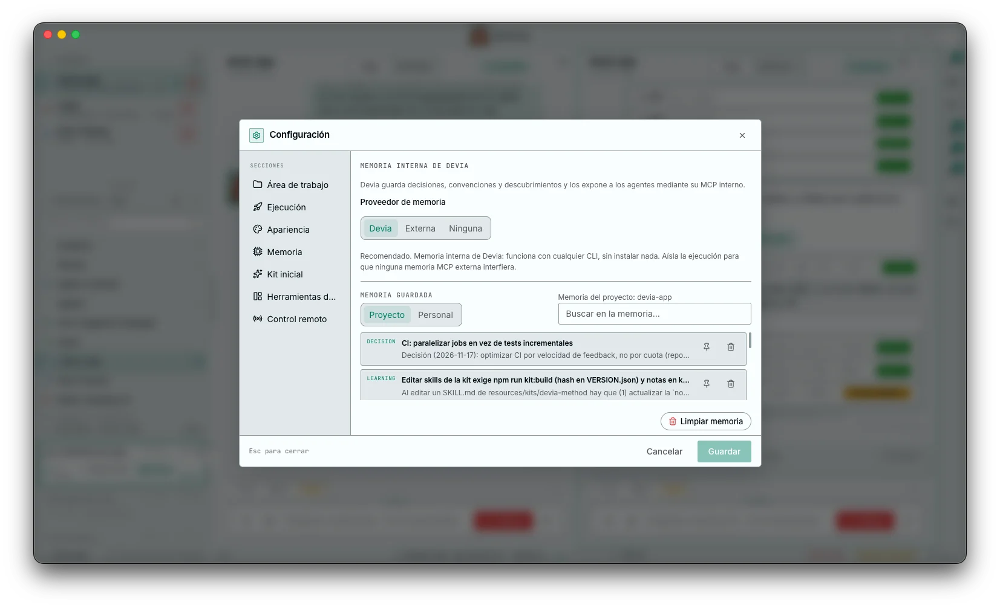

Documentación de Devia Desktop
¿Qué es Devia Desktop?
Devia Desktop es una aplicación de escritorio para desarrollar software con agentes de IA. Es una interfaz unificada sobre varios CLIs agénticos (Claude Code, Codex, Gemini CLI y más) que convierte el trabajo con agentes en terminal en una experiencia visual, organizada y multiproyecto.
Es código abierto (Apache-2.0): gratis y con todas las funciones, disponible para Windows, macOS y Linux. Todo funciona en local, sobre tus proyectos y tus CLIs; no necesita cuenta ni conexión a ningún servicio de Devia.
Instalación
Windows
- Descarga el instalador
.exedesde la página de descargas. - Ejecútalo y elige el directorio de instalación (instalación por usuario, sin permisos de administrador).
- Si SmartScreen muestra un aviso, pulsa «Más información → Ejecutar de todas formas».
macOS
- Descarga el
.dmgde tu arquitectura (Apple Silicon o Intel). - Ábrelo y arrastra Devia a la carpeta Aplicaciones.
- La app está firmada y notarizada por Apple: se abre sin pasos adicionales.
Linux
- AppImage: descárgalo, dale permisos con
chmod +x Devia-*.AppImagey ejecútalo. - Debian/Ubuntu: instala el paquete con
sudo dpkg -i devia_*_amd64.deb.
Primeros pasos
- Elige tu workspace. La primera vez que abres Devia, un modal te pide la carpeta raíz donde viven tus proyectos (por ejemplo
~/repos). Devia lista los proyectos que contiene y detecta su tecnología. - Conecta un agente. Devia detecta los CLIs agénticos instalados en tu máquina y te deja elegir el agente activo en Configuración. Cada proyecto queda configurado para que el agente funcione sin ajustes manuales.
- Conversa. Abre un proyecto y escribe tu primera instrucción en el compositor. Elige el modo de ejecución: plan (solo planifica), apply (aplica con permisos) o apply-yolo (sin confirmaciones), según cuánta autonomía quieras dar.
- Revisa. Cada respuesta llega en streaming con markdown, las llamadas a herramientas se despliegan en tarjetas y los cambios del agente se ven como diffs en línea.
Agentes compatibles
Devia dirige los siguientes CLIs de codificación y puedes cambiar de uno a otro sin salir de la app. El nivel de integración varía según el agente:
| Agente | Integración |
|---|---|
| Claude Code | La más completa: servidores MCP por ejecución, tarjetas de sub-agentes en el chat y reanudación automática tras un límite de uso. |
| OpenCode | Integración dedicada. |
| Pi | Integración dedicada. |
| Kimi y Hermes | Mediante Agent Client Protocol (ACP). El perfil de Kimi aún no está verificado contra el CLI real. |
| Codex, Gemini CLI, Cursor Agent, GitHub Copilot CLI, Grok, Qwen, Qoder y DeepSeek | Integración genérica sobre el streaming de cada CLI. |
| Tu propio agente | Cualquier CLI que hable ACP se puede definir en agent-defs.json. |
Al continuar una sesión con un agente distinto del que la inició, Devia hace un traspaso de contexto: inyecta un resumen del trabajo (objetivo, ficheros tocados y últimos intercambios) en el primer turno del nuevo agente y deja un divisor en el chat. El resumen generado por IA requiere Claude y ANTHROPIC_API_KEY.
Funcionalidades
Agentes y ejecución
- Modos plan, apply y apply-yolo guardados por sesión. Cómo se aplican depende del agente: en Codex, por ejemplo, el modo plan se apoya en las instrucciones del prompt.
- Importa sesiones existentes de Claude Code, Codex y Grok y continúalas en Devia.
- Con Claude Code, Devia reanuda la sesión sola tras un límite de uso, mientras la app siga abierta.
- Contexto usado, coste, tokens y compactaciones de cada sesión, calculados en local.
- Cola de instrucciones por proyecto: encola prompts mientras el agente trabaja, reordénalos con arrastrar y soltar, pausa y reanuda.
- Las llamadas de los sub-agentes de Claude Code aparecen anidadas en el chat.

Multiproyecto y vista dividida
- Listado, creación (vacío o desde plantilla) y clonado de proyectos; favoritos anclados en la barra lateral.
- Historial de sesiones por proyecto que sobrevive a los reinicios.
- Hasta 4 paneles (2×2) en la misma ventana, cada uno con su propia sesión y su agente trabajando en paralelo.
- Cada panel adicional trabaja aislado en su propio git worktree, para que dos agentes nunca pisen los mismos ficheros.

Contexto y memoria
- Memoria persistente entre sesiones (
devia-memory), personal y por proyecto, con reordenación semántica opcional. El agente la consulta y la alimenta; tú la gestionas en Configuración. - Grafo de código propio (6 lenguajes) que los agentes consultan por MCP, con una vista
/graphpara explorarlo. - Code mode: el agente escribe un script TypeScript que se ejecuta en un sandbox sobre los servidores MCP que elijas y devuelve solo el resultado. En esta versión los scripts solo leen.


Método y planificación
- Kanban por proyecto con specs, tareas y dependencias que el agente lee y actualiza por MCP (
devia-kanban). El estado vive fuera del repositorio. - Devia Method: un método de desarrollo propio (skills y prompt de arranque) que Devia entrega a todos los agentes, activable por proyecto.
- Tarjetas interactivas para cualquier agente: preguntas, aprobación de planes, revisión de cambios, confirmaciones y selección. Solo en escritorio.
- Gestor de skills, locales o desde GitHub, y de sub-agentes reutilizables que Devia sincroniza con cada CLI.


Git y revisión
- Estado del repositorio en vivo, visor de diffs en línea, selector de ramas y pull solo fast-forward.
- Comentarios por línea sobre el diff que se envían al agente como petición de revisión.
- Instantáneas con restauración de la configuración de MCP, skills y sub-agentes antes de modificarla.
- Los commits, los push y los pull requests los hace el agente con sus propias herramientas: Devia no los crea por sí mismo.
Servidores MCP
- Gestor de servidores Model Context Protocol con un catálogo inicial: instala, activa y prueba servidores. Devia escribe la configuración en el formato nativo de 9 agentes.
- Cada servidor puede ofrecerse directo al agente o a través de code mode.
Control remoto por Telegram
- Lanza ejecuciones, cambia de modo o de agente, consulta el estado (rama, contexto usado, coste) y conversa con el agente desde Telegram.
- Envío de adjuntos al agente y recepción de los ficheros que genera. Espejo opcional de la conversación de escritorio.
- Solo funciona mientras Devia está abierto y atiende a un único chat autorizado. Las tarjetas interactivas no se muestran en Telegram: el agente pregunta en texto.

Terminal, voz y más
- Terminal integrado por proyecto con PTY real, y apertura del proyecto en 10 IDEs.
- Orquestación de Docker Compose: deploy, down y logs por proyecto.
- Adjuntos de cualquier tipo (hasta 50 MB por fichero) y archivo de los ficheros que genera el agente.
- Dictado por voz local; hoy solo en español.
- Registro de auditoría de cada tool-call.
- Actualización automática de las instalaciones (en Linux, solo con AppImage).
Capacidades y límites
Un resumen honesto de lo que Devia hace hoy y de lo que todavía no hace, para que sepas qué esperar.
Lo que hace
- Dirigir 13 CLIs agénticos desde una ventana, con modos plan, apply y apply-yolo.
- Vista dividida de hasta 4 paneles con git worktrees aislados.
- Kanban, memoria, grafo de código y code mode accesibles para el agente por MCP.
- Gestor de MCP, de skills y de sub-agentes.
- Tarjetas interactivas para preguntar, aprobar planes y revisar cambios.
- Comentarios de revisión por línea enviados al agente.
- Control remoto por Telegram, con envío de ficheros.
- Terminal, Docker Compose y apertura en IDEs.
Lo que hace en parte
- Importar sesiones: solo desde Claude Code, Codex y Grok.
- Reanudar tras un límite de uso: solo Claude Code, y solo mientras la app siga abierta.
- Tarjetas de sub-agentes en el chat: solo Claude Code.
- Reinyectar la memoria cuando el agente compacta su contexto: solo Claude y Pi.
- Agentes propios: solo los que hablan ACP.
- Dictado por voz: solo en español, y su funcionamiento en la versión empaquetada está pendiente de verificar.
- Interfaz en 11 idiomas: español e inglés están completos; en el resto puede haber textos sin traducir.
- Telegram: solo mientras Devia está abierto, con un único chat autorizado, y sin tarjetas interactivas.
Lo que todavía no hace
- Crear commits, hacer push o abrir pull requests desde la interfaz.
- Usar GitHub, GitLab, Linear o Jira como fuente de tareas.
- Editor de ficheros integrado: el árbol del proyecto es de solo lectura y los ficheros se abren en tu IDE.
- Un coordinador que lance y supervise varios agentes trabajadores. Hoy el paralelismo es la vista dividida, dirigida por ti.
- Automatizaciones programadas o disparadas por eventos.
- Ejecutar en servidores remotos por SSH, en la nube o sin interfaz gráfica.
- Una app móvil nativa: el móvil se usa a través de Telegram.
- Un sistema de plugins para paneles o temas de terceros.
- Control del ordenador, emuladores móviles o un navegador integrado.
Configuración y datos
Casi toda la información de Devia vive en tu disco, bajo ~/.devia-app/ (en Windows, C:\Users\<tu-usuario>\.devia-app\):
| Ruta | Contenido |
|---|---|
devia-app.config.json | Configuración: workspace, agente activo, idioma… (los secretos, como el token de Telegram, se guardan cifrados) |
sessions/<proyecto>/ | Historial de chat por proyecto |
projects/<clave>/ | Datos por proyecto: tablero Kanban (kanban.json) y memoria (memory.json) |
memory-global.json | Memoria personal |
mcp-servers.json | Servidores MCP configurados |
snapshots/ | Instantáneas de la configuración antes de modificarla |
worktrees/ | Git worktrees de los paneles adicionales de la vista dividida |
attachments/ | Ficheros adjuntados en el compositor o por Telegram |
outbox-archive/ | Ficheros generados por el agente |
Para hacer copia de seguridad de tu Devia basta con copiar esa carpeta. Borrarla devuelve la app a su estado inicial. El registro de auditoría de las tool-calls se guarda aparte, en la carpeta de datos de usuario de la aplicación.
Actualizaciones
Las versiones publicadas se anuncian en el manifiesto público de este sitio: updates/latest.json. Contiene la última versión disponible, la fecha de publicación, las notas y los enlaces de descarga por plataforma.
Las instalaciones de Devia Desktop se actualizan solas desde las Releases del repositorio (en Linux, solo con AppImage). También puedes consultar la última versión a mano o desde tus scripts:
curl -s https://dherrero.github.io/devia/updates/latest.json | jq .versionPreguntas frecuentes
¿Devia es gratis?
Sí. Devia Desktop es de código abierto (Apache-2.0), con todas las funciones, en todas las plataformas.
¿Necesito cuenta o conexión a algún servicio de Devia?
No. Devia Desktop funciona en local. Los únicos servicios externos que se usan son los de los propios agentes CLI que tú tengas configurados.
¿Devia incluye los agentes de IA?
No: Devia es la interfaz que los dirige. Necesitas tener instalado al menos un CLI agéntico (Claude Code, Codex, Gemini CLI, OpenCode…) con sus credenciales. Devia los detecta y se encarga del resto.
¿Mis datos salen de mi máquina?
Sesiones, memoria, kanban y configuración viven en ~/.devia-app/. El dictado por voz también se ejecuta en local. Lo único que viaja es lo que envíe el CLI del agente que uses a su propio proveedor.
¿En qué idiomas está disponible?
Esta web está en español, inglés, valenciano, francés, alemán, italiano, portugués, ruso, chino, hindi y árabe. La app tiene los mismos 11 idiomas, pero solo español e inglés están completos: en los demás pueden aparecer textos sin traducir.
¿Puedo controlarlo desde el móvil?
Sí, a través de Telegram, siempre que Devia esté abierto en tu ordenador. No hay una app móvil nativa.
¿Cómo reporto un problema?
Abre una incidencia en el repositorio de GitHub de Devia con los pasos para reproducirlo y tu plataforma (Windows/macOS/Linux).